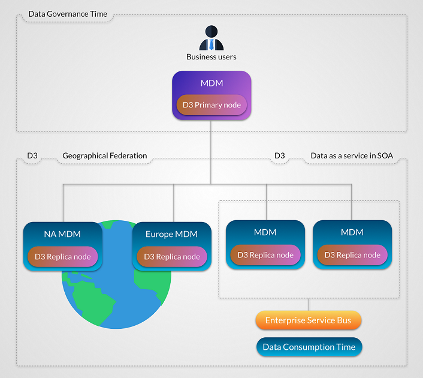

TIBCO EBX® offers the ability to send data from an EBX® instance to other instances. Using a broadcast action, it also provides an additional layer of security and control to the other features of EBX®. It is particularly suitable for situations where data governance requires the highest levels of data consistency, approvals and the ability to rollback.
A typical D3 installation consists of one primary node and multiple replica nodes. In the primary node, a Data Steward declares which dataspaces must be broadcast, as well as which user profile is allowed to broadcast them to the replica nodes. The Data Steward also defines delivery profiles, which are groups of one or more dataspaces.
Each replica node must define from which delivery profile it receives broadcasts.

The features of D3 also allow third-party systems to access the data managed in EBX® through data services. Essentially, when a system consumes the data of a delivery dataspace, the data is transparently redirected to the last broadcast snapshot. This ensures a more controlled and reliable view of the managed data.
Third-party systems can either access data directly through the primary node or through a replica node. Thus, a physical architecture consisting of a primary node and no replica nodes is possible.
If JMS is activated, the conversation between a primary node and a replica node is based on SOAP over JMS, while archive transfer is based on JMS binary messages.
If JMS is not activated, conversation between a primary node and a replica node is based on SOAP over HTTP(S), while binary archive transfer is based on TCP sockets. If HTTPS is used, make sure that the target node connector is correctly configured by enabling SSL with a trusted certificate.
broadcast | Send a publication of an official snapshot of data from a primary node to replica nodes. The broadcast transparently and transactionally ensures that the data is transferred to the replica nodes. |
delivery dataspace | A delivery dataspace is a dataspace that can be broadcast to authenticated and authorized users using a dedicated action. By default, when a data service accesses a delivery dataspace on any node, it is redirected to the last snapshot that was broadcast. See Data services. |
delivery profile | A delivery profile is a logical name that groups one or more delivery dataspaces. Replica nodes subscribe to one or more delivery profiles. |
cluster delivery mode | Synchronization with subscribed replica nodes is performed in a two-phase commit transactional process. This delivery mode is designed to respond to a high volume of queries using load balancing and/or fault tolerance. It ensures the consistency of data in the cluster between replica nodes and their primary node delivery dataspaces. Primary and replica nodes use the same last broadcast snapshots. |
federation delivery mode | Synchronization is performed in a single phase, and with each registered replica node independently. This delivery mode is designed to be used with geographically distributed and/or heterogeneous architectures where response time and network availability cannot be guaranteed. At any one time, replica nodes can be at different last broadcast snapshots. The synchronization processes are thus independent of one another and replay of individual replica nodes are performed for certain broadcast failures. |
Primary node | An instance of EBX® that can define one or more delivery dataspaces, and to which replica nodes can subscribe. A primary node can also act as a regular EBX® server. |
Replica node | An instance of EBX® attached to a primary node, in order to receive delivery dataspace broadcasts. Besides update restrictions on delivery dataspaces, the replica node acts as a regular EBX® server. |
Hub node | An instance of EBX® acting as both a primary node and a replica node. Primary delivery dataspaces and replica node delivery dataspaces must be disjoint. |
Each replica node must have only one primary node.
Embedded data models cannot be used in D3 dataspaces. Therefore, it is not possible to create a dataset based on a publication in a D3 dataspace.
The compatibility is not assured if at least one replica node product version is different from the primary node.
Access rights on dataspaces are not broadcast, whereas access rights on datasets are.
Dataspace information is not broadcast.
If a dataspace and its parent are broadcast, their parent-child relationship will be lost in the replica nodes.
Once a snapshot has been broadcast to a replica, subsequent broadcasts of any snapshot with the same name will result in restoring the originally broadcast version of that same name on the replica node. That is, if the original snapshot on the primary node is purged and a new one is created with the same name and subsequently broadcast, then the content of the replica will be restored to that of the previously broadcast snapshot, and not to the latest one of the same name.
To guarantee dataspace consistency between D3 nodes, the data model (embedded or packaged in a module) on which the broadcast contents are based, must be the same between the primary node and its replica nodes.
On a replica delivery dataspace, if several replica nodes are registered, and if replication is enabled in data models, it will be effective for all nodes. No setting is available to activate/deactivate replication according to D3 nodes.
Replication on replica nodes does not take part in the distributed transaction: it is automatically triggered after commit.
Technical dataspaces cannot be broadcast, thus the EBX® default user directory cannot be synchronized using D3.